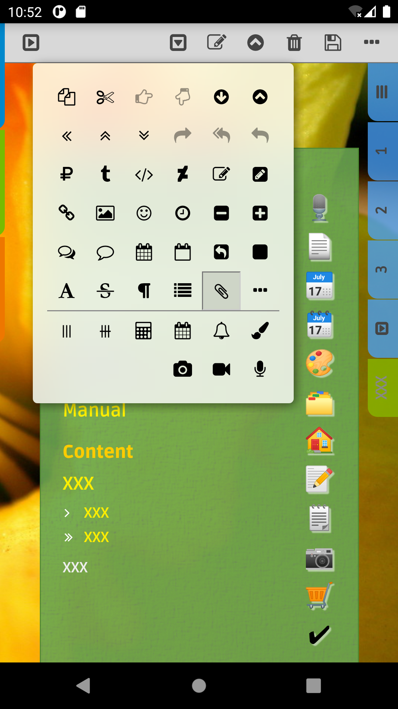
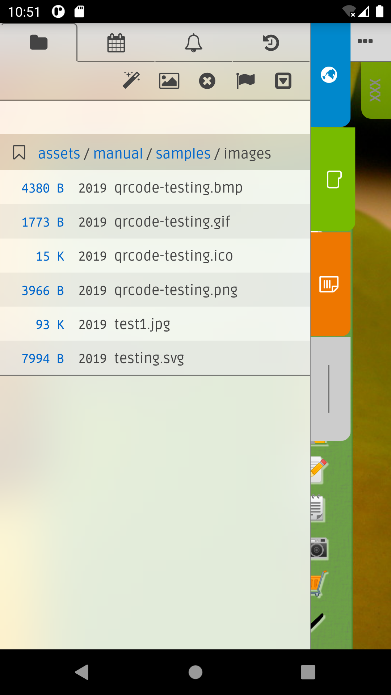
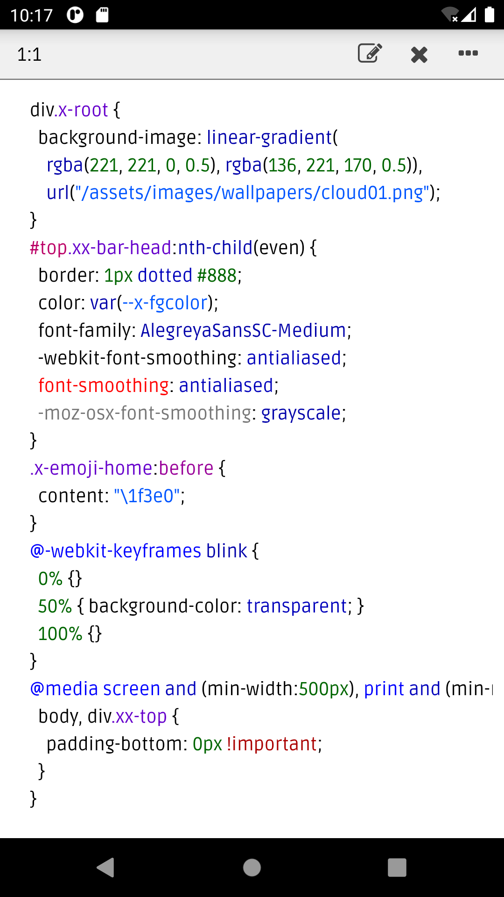

v 3.0 (beta1)

Introduction (Desktop)
This is the desktop version of
C+edition v3. It is very similar to the C+edition v3 for Android and iOS, and documents can be moved between the desktop and mobile versions. A few notable differences:
- The desktop version is currently in beta. It is currently tested to works in Linux only and lack the media recording features.
- Unlike the mobile versions that keep encryption keys in hardware backed keystore, that is device only and not exportable, the desktop version keep the keys in a
password protected keystore The keystore is protected by a password. The application read the password from stdin at startup. So typically, you start the application with:
cat passfile | java ...
See
scripts/start.sh for details. You should keep the passfile at a
secure storage.
file and keys can be easily managed with Java keytool. - Unlike the moble versions that encrypt the documents in the Home directory, the desktop version keep documents in the Home directory as
plain text fileYou are encouraged to keep the application and documents in an encrypted disk and use version control software of your choice.
. - You can launch the desktop version in debug mode and have the Developer Tools at your disposal. A few keyboard shortcut is available:
- Ctrl+Shift+i Show developer tools (when debug is enabled at the client by command line switch
-dEnable debug and show developer tools on startup.
or -DEnable debug without showing the developer tools on startup.
). - Ctrl+f Show search bar.
- Ctrl+Shift+f Show main toolbar.
Feature highlights
For the new comers, here are some notable features of the app:
- Rich HTML editor with multi-level undo and redo, text search, lots of fonts, resizable UI, ... etc.
- CSS editor for file with syntax highlight, context assist, text search, ... etc. You can switch between HTML and CSS editor in a
single clickFor the desktop version,shift+right-click below the right sidebar, ie. at the right margin, would bring up the CSS editor for the last writable CSS file that is linked to the HTML file and changes to the CSS file would be applied to the HTML file automatically.
or swipe. The full feature CSS editor is also used to in HTML file. - Task specific page templates and actions that make , , , albums, ... etc. quick and easy.
- File manager help you keep track of thousands of files with ease.
- Encrypted backup/restore allow moving files securely. Or you can just copy/paste unencrypted files and move files around with ease.
V3.0 features
While many user visible features are very similar to v2.x, there are some major rewrites and changes under the hood in v3.0 and render this version not backward compatible with v2.x. Here are some of the highlights for this release:
- Backup files are now protected using asymmetric crypto. Each instance has its own unique private/public key pair for backup and restore. Backup files are only readable by recipients with private key that corresponds to one of the imported public keys used when creating the backup.
- The Internal and External backup directories are now shown under the Files panel along side with the Home tree. You may now move files around by simply copying files between the various directory trees, including HTML, CSS, all the media files and even backup or zip files.
- The UI now use translucent background with backdrop filter to pickup some colors from the background. Dialogs are and do without labels in many cases. In other cases, it added tab panes for .
- The CSS editor now has a format action that to reformat your CSS files. The CSS editor also save its cursor position on close and restore the cursor position on open, making it a lot easier to switch between HTML and CSS editing.
- There is now a CSS Classes menu at the right sidebar and Main Contextmenu that make it easier to add/remove CSS classes to/from an element. Along with convenient, single click or swipe, access to custom stylesheet editing, using custom stylesheet is much easier.
- The app. now support standard HTML5 audio/video tags to play audio/video. The Audio and Photo templates are now merged into a Media template where you can embed all kind of media files in one place. Or use the Insert Audio and Insert Video actions to insert the AUDIO and VIDEO element to any document.
- The in the Main Contextmenu/ is expanded to handle background-image with gradient, image and backdrop filters. Indeed it replaced the Glass widget action in the Widgets menu as it can do that and more.
- Clicking the size column of a directory in the Files panel now shows the total number of files and size under the directory that would be useful, for example, for estimating the size of a backup.
- Very often, an IMG element is wrapped inside an anchor (A) element so that it open the image viewer on click. There is now a custom attribute x-action="view" for the IMG element that would do the same without having to use the anchor element. In some cases, this make it a lot easier to layout images.
- And many more ...
Bugs
- PDF viewer is not working yet.
{kind=link}
{kind=link}